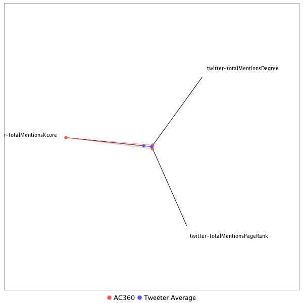

This tweeter has been identified as a super spreader. Its target audience and hashtag and word usage are analyzed below.
Basic Statistics
Number of direct followers 913039 The peak number of followers that the tweeter had during any time period. Number of retweeters 26 Number of agents that retweeted the key influencer. Number of secondary followers 3768104 The sum of the followers of those who retweeted the key influencer.
Measure Values of Super Spreaders node versus Tweeter Average
This compares the measure values of the key influencer with the average values across all tweeters. For each measure line, the center-point means zero and the end-point means the maximum score across all tweeters.

Where was the influencer?
The agent is not recorded as being in any locations. Either he tweeted without geo-tags or we have no information about the tweets he sent.
The agent and retweeters were in 3 different locations.

What hashtags did the influencer use?
This displays the top ranked hashtags that the influencer and its retweeters used.
Rank hashtag Count 1 TheLead 293 2 MemorialDayWeekend 223 3 adopt 220 4 AdoptDontShop 170 5 dog 170 6 CNNsotu 159 7 cat 102 8 rescue 88 9 NYC 80 10 foster 79 11 CATS 58 12 txlege 55 13 Comey 54 14 BREAKING 48 15 dogs 47 16 AHCA 44 17 MemorialDay 42 18 ge2017 40 19 CA 37 20 Russia 32 21 dogsoftwitter 31 22 bbcelection 28 23 PLEDGE 27 24 ParisAgreement 27 25 CNN 25 26 Florida 25 27 Kitty 25 28 ComeyHearing 24 29 LOVE 22 30 badasswomenDC 21 31 JFK100 19 32 caturday 19 33 OTD 18 34 Tampa 18 35 MetGala 16 36 SOS 16 37 Trump 16 38 odd 16 39 staffysunday 16 40 AdoptMe 15 41 Houston 15 42 TX 15 43 Manchester 14 44 ManchesterBombing 14 45 Memphis 14 46 SpecialCounsel 14 47 TheBachelorette 14 48 UK 14 49 dogsarelove 14 50 DDay 13 51 TrainSam 13 52 Venezuela 13 53 adoptable 13 54 CongressionalBaseballGame 12 55 KITTEN 12 56 Kittens 12 57 NorthKorea 12 58 Obamacare 12 59 sb4 12 60 CNNTownHall 11 61 ComeyFiring 11 62 EUTH 11 63 Germany 11 64 InsidePolitics 11 65 Pets 11 66 StPete 11 67 TEXAS 11 68 TampaBay 11 69 URGENT 11 70 dachshund 11 71 rabbit 11 72 BattleofWanat 10 73 COPKeating 10 74 FF 10 75 FortBend 10 76 GA06 10 77 Holland 10 78 MothersDay 10 79 NeverForget 10 80 folloback 10 81 trumprussia 10 82 AdoptAShelterCat 9 83 AdoptDontBuy 9 84 EasyAsACC 9 85 FITZ 9 86 FortWorth 9 87 KatyTX 9 88 LondonBridge 9 89 Macron 9 90 NC 9 91 OTLFP 9 92 TN 9 93 bbmas 9 94 woofwoofwednesday 9 95 AP 8 96 ComeyTestimony 8 97 DWTS 8 98 Dartmouth17s 8 99 FathersDay 8 100 FinsburyPark 8
Tweet List
This displays all of the tweets of the influencer ordered from earliest to latest. Click on a tweet to see its status in Twitter.
Number Tweet ID Date Message 1 859213562799157248 2017-05-01 21:10:51-04 FBI translator goes rogue and marries an ISIS terrorist https://t.co/wMqENNQhna @DrewGriffinCNN has more. https://t.co/4NmGmOMeIf 2 862112186432454657 2017-05-09 21:08:57-04 FBI Director James Comey learned from the TV that he was fired, according to law enforcement sources. https://t.co/uOt3qdbmPD 3 859964282242560001 2017-05-03 22:53:56-04 Is the Trump White House taking credit for border fence construction approved by previous presidents? https://t.co/RsBhRieS3f 4 862486260530769920 2017-05-10 21:55:23-04 Sen. Blumenthal: Comey firing "may well produce impeachment proceedings" https://t.co/YZ32bCBsdM https://t.co/XctE9myqOY 5 860648026062430208 2017-05-05 20:10:54-04 Senators ask Trump associates for records of Russia contacts https://t.co/YZ32bCBsdM @jimsciutto has more. https://t.co/WEV8rlTIFd 6 862121590586322944 2017-05-09 21:46:19-04 Jeffrey Toobin: "Look at the body count of people who have been investigating President Trump" https://t.co/b8jChkKmja 7 863196935557087233 2017-05-12 20:59:21-04 Anger boils over at town halls as constituents confront Republicans and vent their outrage over the GOP health bill https://t.co/IKX6ERyN34 8 862843397685600256 2017-05-11 21:34:31-04 Pres. Trump's words contradict White House explanation on Comey firing CNN's @DanaBashCNN has more. https://t.co/VldCaNTcpj 9 860332040390148097 2017-05-04 23:15:17-04 #KeepingThemHonest: WH claims credit for border wall approved by previous presidents @GaryTuchmanCNN has more. https://t.co/kKQ0ExL8Ex 10 859936065163022336 2017-05-03 21:01:49-04 Fmr. Trump campaign adviser Carter Page: "I've been very cooperative with a lot of individuals in government" https://t.co/DI1453tzvX 11 862829557832966146 2017-05-11 20:39:31-04 Trump calls Russia probe “made-up story” and excuse by Democrats for why they lost election https://t.co/WJXvxrAb4K https://t.co/C39TkEdry9 12 862839677283422208 2017-05-11 21:19:44-04 Comey turmoil continues to cloud the Trump White House https://t.co/kValxKW8mg 13 862822658366468101 2017-05-11 20:12:06-04 Timeline: Pres. Trump's words contradict the White House's answers on the firing of Comey https://t.co/yqugpnUArk https://t.co/Du4KVrBA97 14 862482766251925504 2017-05-10 21:41:30-04 James Comey is the latest, but not the first person to be fired by Pres. Trump after investigating him https://t.co/90lXgdKQB0 15 862483808238612480 2017-05-10 21:45:38-04 Sen. Lankford on why the Senate Intel committee subpoenaed documents from Michael Flynn: "He didn't turn them over" https://t.co/cypVpZy5RJ 16 862472686919966720 2017-05-10 21:01:27-04 Trump supporter Jeffrey Lord to critics of Comey firing: "I think you are in a bubble" https://t.co/YZ32bCBsdM https://t.co/gJLKt2YKAV 17 862474210173739008 2017-05-10 21:07:30-04 Senate Intel committee subpoenaing Michael Flynn indicates the Russia investigation continues, Rep. Himes says https://t.co/E3msbnmBVJ 18 862468734220476416 2017-05-10 20:45:44-04 Sen. Blumenthal: The Deputy AG's letter is a "ludicrous pretense" for the Comey firing https://t.co/YZ32bCBsdM https://t.co/c73Gz87Gcp 19 862460905686224896 2017-05-10 20:14:38-04 WH calls Comey's email investigation actions "atrocities": '1994 Rwanda, Syria' are atrocities, @andersoncooper says https://t.co/49S5LTzyoR 20 862463590720303104 2017-05-10 20:25:18-04 James Comey sends farewell letter to friends and agents https://t.co/Dt0jn2QkOx https://t.co/tMst0KQbWD 21 862120244730580992 2017-05-09 21:40:58-04 Prosecutors issued grand jury subpoenas to associates of former national security adviser Michael Flynn, sources say https://t.co/QS2NDnMKb5 22 862110573986754560 2017-05-09 21:02:32-04 Kellyanne Conway defends firing of James Comey in tense exchange with CNN’s @andersoncooper https://t.co/RtM2jO283G https://t.co/j8Qm52irNO 23 862116220681715714 2017-05-09 21:24:59-04 Van Jones: The way this decision was made appears to move us away from rule of law and toward rule by a small clique https://t.co/XhPSLy3Vh0 24 862116761180700673 2017-05-09 21:27:07-04 .@JeffreyToobin calls @realDonaldTrump's firing of James Comey a "grotesque abuse of power" https://t.co/JrRoXrx77n https://t.co/GwjpDxooa7 25 862096716442611717 2017-05-09 20:07:28-04 CNN legal analyst Jeffrey Toobin on firing of FBI Director James Comey: "This is a dark day in American history" https://t.co/aMyJknfHyV 26 860655444460810240 2017-05-05 20:40:22-04 French presidential candidate Macron's campaign claims it was target of "massive and coordinated hacking operation" https://t.co/l6xoCHGHki 27 860670606135656449 2017-05-05 21:40:37-04 WH responds to questions about border fencing claims: 'It's an honest mistake' CNN's @GaryTuchmanCNN reports. https://t.co/O9cx2pBsNJ 28 860313012128940033 2017-05-04 21:59:40-04 .@SenJohnMcCain: "If we don't stand for human rights, ... then we're no different than any other country" https://t.co/YTMV54VS1o 29 860313978857193472 2017-05-04 22:03:31-04 Sen. John McCain: It should not be an 'honor' to sit down with Kim Jong Un https://t.co/W7jR2TvLj7 30 860315615432777728 2017-05-04 22:10:01-04 Sen. John McCain: "I'm sure that the Russians tried to interfere" in the 2016 election https://t.co/z17V55PlIi 31 860291492220424193 2017-05-04 20:34:09-04 .@SenSanders: "If the bill passed today in the House became law, thousands of Americans would die" https://t.co/XRO4Kc2j2I 32 859928494343675908 2017-05-03 20:31:44-04 FBI Dir. Comey said it makes him "mildly nauseous" to think he could've affected the election, but he has no regrets https://t.co/pkYxP7X1nr 33 859130558533832704 2017-05-01 15:41:01-04 The FBI translator who went rogue and married an ISIS terrorist https://t.co/xt0qPIhKSS 34 864641453615722501 2017-05-16 20:39:21-04 "I think we're in impeachment territory" @david_gergen reacts to news of James Comey memo https://t.co/yCgzdgP2f5 https://t.co/LXsxOXfuJ3 35 864190553528860674 2017-05-15 14:47:38-04 A CNN TV Exclusive: Former acting Attorney General Sally Yates, who was fired by Trump, sits down with @andersoncooper tomorrow 8pm ET https://t.co/N4ZYvz7odj 36 864648346035769345 2017-05-16 21:06:44-04 Sally Yates on the Comey firing: “I think there are serious questions about both the timing and the motivation” https://t.co/pfx4jRGP0a 37 864652524753735680 2017-05-16 21:23:21-04 Sally Yates says there was both "underlying conduct" and "public misrepresentation" that were problematic for Flynn https://t.co/ofbDU5Rk1O 38 864651284560961537 2017-05-16 21:18:25-04 Yates says there were misrepresentations coming out of White House, based specifically on what Flynn told them https://t.co/lXziJ00xlT 39 864650628659806209 2017-05-16 21:15:48-04 Yates: Our loyalty at the Department of Justice should be to the people of the US, and the law and the Constitution https://t.co/sH4xc8G3Uq 40 864648917161574400 2017-05-16 21:09:00-04 Sally Yates: “It seems to me that there is only one truth and we ought to get to that” https://t.co/jaoECThqPv 41 864647882305044486 2017-05-16 21:04:54-04 Sally Yates: James Comey isn't a "showboat" as Trump called him, but he is a "straight shooter" who speaks his mind https://t.co/M5z44QFQXy 42 864654412400275456 2017-05-16 21:30:51-04 Sally Yates describes how she found out she was fired: "A letter arrived at my office door" https://t.co/TA92WwAjun https://t.co/MLt4YZ7I2K 43 864654967008874498 2017-05-16 21:33:03-04 Sally Yates: I wasn't looking to be fired, but given the situation I was in, I couldn't have done anything else https://t.co/MLt4YZ7I2K 44 864638975402573824 2017-05-16 20:29:30-04 "Wide-eyed and W-T-F" - @jimsciutto reports that GOP lawmakers have "real concern" amid news of Comey memo. https://t.co/fur6HJYmyl 45 866863633602666496 2017-05-22 23:49:30-04 Rep. Jayapal on Trump approaching intel chiefs on Russia probe: If true, I do believe it's obstruction of justice https://t.co/C4aEwvZeKH 46 866826799682080768 2017-05-22 21:23:08-04 Police looking into possibility a suicide bomber carried out deadly attack at Ariana Grande concert, officials say. https://t.co/Agyw0VseTU 47 866817514541637633 2017-05-22 20:46:14-04 • At least 19 dead, 50 hurt, police say • Witnesses: Blasts heard as people left • Venue held 20K https://t.co/5oMFtElczX 48 865756848225497088 2017-05-19 22:31:32-04 Former FBI Director James Comey now believes Trump was trying to influence him, source says https://t.co/llWOzWsk3V https://t.co/lQC6yNCl9F 49 865744187177783297 2017-05-19 21:41:13-04 .@maggieNYT on Trump bragging to Russians about Comey's dismissal: "This is unusual diplomacy to say the least" https://t.co/yVmX6q7UuH 50 865722783401213952 2017-05-19 20:16:10-04 Former FBI Director James Comey will testify publicly before the Senate intel committee, panel leaders announce https://t.co/wVzXUt8xOw 51 865732736681639936 2017-05-19 20:55:43-04 First on CNN: Russian officials bragged they could use Michael Flynn to influence Donald Trump, sources say https://t.co/thO9yURmms 52 865673337552465921 2017-05-19 16:59:41-04 She was fired by Donald Trump. Hear former Acting AG Sally Yates tell her side of the story. @AC360 tonight at 11ET https://t.co/EK7Xjqk5kz 53 865626737006202885 2017-05-19 13:54:31-04 White House in Crisis: A CNN Special Report with @jimsciutto and @PamelaBrownCNN is live tonight at 10ET https://t.co/kCv5HsqXuP 54 864999304871673856 2017-05-17 20:21:19-04 DOJ names Robert Mueller to oversee federal probe into campaign interference https://t.co/yyO9BqW28K https://t.co/rRv1fXTprC 55 867228200845422594 2017-05-23 23:58:10-04 White House clashes with top watchdog over ethics waivers https://t.co/U5VRiMyzJC 56 867223545620901888 2017-05-23 23:39:40-04 Rep. Quigley on Russia probe: "There's enough probable cause to believe that there was cooperation" https://t.co/gK8JXLt3Xd 57 866864356725862401 2017-05-22 23:52:22-04 Rep. Banks: "I'm content with waiting for the investigations to work their way through the process" https://t.co/XOsoNiVxCX 58 866856834543517698 2017-05-22 23:22:29-04 Source: Trump asked intel chiefs to deny evidence of Russia collusion https://t.co/NMpwWufzqr https://t.co/I1eufFBYnc 59 869709805874802690 2017-05-30 20:19:10-04 "What's 'source' for the goose is apparently not 'source for the gander." @andersoncooper is #KeepingThemHonest https://t.co/Rva3o3pOx0 60 867542416714289152 2017-05-24 20:46:44-04 Who are the victims of the Manchester terror attack? https://t.co/FUhKkesqZ5 https://t.co/3f1e6jAs7G 61 867508784339595264 2017-05-24 18:33:06-04 "This is a guy with a story to tell." A friend of James Comey said he'd be scared if he were President Donald Trump https://t.co/lLwpkTWFSm 62 867541638272438272 2017-05-24 20:43:39-04 Fmr. CIA operative: We shouldn't know the name of the Manchester bomber because it undercuts the UK investigation https://t.co/F2GZK2NqxY 63 867547057971712000 2017-05-24 21:05:11-04 The anatomy of a conspiracy theory: How an unsolved (real) murder became fake news https://t.co/o2QJxSPdiT https://t.co/XQ29T3fu6I 64 867534764764389376 2017-05-24 20:16:20-04 "Much to do about nothing." Ex-Trump campaign official on Sessions not disclosing contacts with Russian officials https://t.co/kpkK9NX5Tn 65 867533737503989760 2017-05-24 20:12:15-04 DOJ: Jeff Sessions did not disclose Russia meetings in a security clearance form https://t.co/bRf66z9eXv https://t.co/H7KqW9qW5g 66 867548404209127426 2017-05-24 21:10:32-04 Montana GOP candidate allegedly "body slams" reporter, according to audio, witness accounts https://t.co/Cq7cQx5UrX https://t.co/dqcanBayzb 67 867199330851184640 2017-05-23 22:03:26-04 Friend of James Comey says the ex-FBI Director felt Trump was trying to "make a loyalist out of him" https://t.co/aqohyq9IdR 68 869716700656267266 2017-05-30 20:46:34-04 Sen. Al Franken on the Trump administration: "This group isn't acting like people who don't have anything to hide" https://t.co/bcamDviE5L 69 872615089001684993 2017-06-07 20:43:44-04 Do Comey's new revelations show obstruction of justice? https://t.co/3WZ9VDONKf @AlanDersh and @JeffreyToobin debate https://t.co/I799r7hzCl 70 875149547831529473 2017-06-14 20:34:46-04 Mueller investigating Trump for obstruction of justice, Washington Post reports https://t.co/g9dBr1Ik7z https://t.co/dHuX6z88ID 71 874796201467682818 2017-06-13 21:10:42-04 Jason Miller: Sessions knocked away "hysteria from Kamala Harris" Kirsten Powers: “How was Sen. Harris hysterical?” https://t.co/ivRYRNSzBZ 72 875144241030320128 2017-06-14 20:13:41-04 Rep. Williams on Capitol Police: "That thin blue line -- it worked today" https://t.co/YZ32bCBsdM https://t.co/HdhZewRjfU 73 875145232458842112 2017-06-14 20:17:37-04 Rep. Roger Williams: "We can agree to disagree, but at the end of the day, we are one" https://t.co/YZ32bCBsdM https://t.co/OBeoByZvTm 74 875143423736631298 2017-06-14 20:10:26-04 Rep. Roger Williams: "If the Capitol Police were not there, I'm afraid we would've all been dead" https://t.co/EiQpVCtQoD 75 874419629707452418 2017-06-12 20:14:20-04 Trump supporter Jason Miller says it would be "bad idea jeans" if the President fires special counsel Robert Mueller https://t.co/mviNOp2LL6 76 874429501261918209 2017-06-12 20:53:33-04 Maryland & DC sue Trump over foreign payments. The AGs who say he's violating the constitution join @andersoncooper https://t.co/Mv7tcyRoeC 77 874425802548535297 2017-06-12 20:38:52-04 .@mattklewis on Trump's claim of tape recordings: "I suspect he was trolling James Comey" https://t.co/YZ32bCBsdM https://t.co/0TVktkrXra 78 874417487638646787 2017-06-12 20:05:49-04 Trump friend says President is considering "terminating" special counsel Robert Mueller CNN's Jim @Acosta has more. https://t.co/5HtSXRyHcH 79 872851391278190595 2017-06-08 12:22:43-04 Comey has called Trump a liar five times today. The White House fires back: "the president is not a liar." https://t.co/1PQVtZoZ7h 80 872854782477819905 2017-06-08 12:36:11-04 Comey: Trump fired me because the Russia investigation "was in some way putting pressure on him" https://t.co/XP1AGeDUxo 81 872846049001525248 2017-06-08 12:01:29-04 James Comey on the Russians: "It's not about Republicans or Democrats. They're coming after America" https://t.co/UpCnBVomNI 82 872838888330592257 2017-06-08 11:33:02-04 About claims Russia investigation is “fake news,” Comey says, “it’s about as un-fake as you can possibly get” https://t.co/h4ia658YXC 83 872836166835470336 2017-06-08 11:22:13-04 James Comey has called Donald Trump a liar twice so far during his testimony on Capitol Hill https://t.co/1d5hRVR0El https://t.co/dJfb1GwXcr 84 872818858687696897 2017-06-08 10:13:26-04 Sen. Mark Warner: "We're here because a foreign adversary attacked us right here at home. Plain and simple." https://t.co/0Mn33fk2gA 85 872821822236000257 2017-06-08 10:25:13-04 The administration "chose to defame me," says fired FBI Director James Comey at Senate hearing https://t.co/EjMwviUkoI 86 872825492642160640 2017-06-08 10:39:48-04 James Comey says he wrote memos about meetings with Trump because “he might lie about the nature of our meeting” https://t.co/wu2ReVBUkr 87 872831465708507137 2017-06-08 11:03:32-04 Fired FBI Director James Comey on President Trump’s “tapes” tweet: “Lordy, I hope there are tapes.” https://t.co/jD5wuFgWfx 88 872834132136669184 2017-06-08 11:14:08-04 "I believe the timing of your firing stinks," Sen. Ron Wyden tells James Comey at Senate hearing https://t.co/bXPu9XWaxy 89 872822278274383872 2017-06-08 10:27:02-04 Do you have any doubt that Russia attempted to interfere in the 2016 election? Comey: “None.” https://t.co/RyiYJS0pVD 90 872831569999925249 2017-06-08 11:03:57-04 Do you believe the Russia investigation played a role in your firing? Comey: “Yes… I’ve seen the President say so.” https://t.co/tNB0as7dCa 91 872605741424791553 2017-06-07 20:06:35-04 James Comey testimony: President Trump asked me to let the Michael Flynn investigation go https://t.co/BwRNnIo3uF https://t.co/V1WBNX5dsR 92 872633793974239236 2017-06-07 21:58:03-04 How are the latest revelations in the Russia investigation playing out in Trump Country? Are they still with him? https://t.co/99pbbvpZXo 93 872629777588473857 2017-06-07 21:42:06-04 Former CIA Director James Woolsey says intel chiefs should have agreed to answer questions in a closed session https://t.co/oHNwBWafzF 94 872607276980477952 2017-06-07 20:12:41-04 'President feels completely and totally vindicated' by Comey statement, lawyer says https://t.co/n6AG34wjYe https://t.co/hoI0cI0qSO 95 872616791918489600 2017-06-07 20:50:30-04 Democrats are furious at evasive answers at the Senate intelligence committee's hearing https://t.co/QfcsE5DDnt https://t.co/c2dQsFdZd2 96 872608497883639809 2017-06-07 20:17:32-04 .@carlbernstein says the Comey statement is "devastating to the President of the United States" https://t.co/WrAIiT4Xgd 97 872620410654818305 2017-06-07 21:04:53-04 Rep. Himes on Comey statement: What matters is whether the President intended to influence the investigation https://t.co/hK7KQmzHHi 98 872623470525509632 2017-06-07 21:17:02-04 Rep. Himes on Trump: "The argument he didn't know better ... for the President of the US that doesn't cut the ice" https://t.co/dpzB37y3Gi 99 872611799526510592 2017-06-07 20:30:40-04 Former Federal Prosecutor Jeffrey Toobin says the Comey statement shows a compelling case for obstruction of justice https://t.co/FCtNHRA5Jb 100 874448540315119616 2017-06-12 22:09:13-04 Meet Jimmy Hatch, a Navy veteran on a mission to protect the unsung heroes of a police force. #ChampionsForChange https://t.co/V7FD9wCr59 101 870079165881622528 2017-05-31 20:46:53-04 If US withdraws from Paris agreement, it would be only the third country to reject it -- joining Syria and Nicaragua https://t.co/SabbakYgCW 102 870091958739492865 2017-05-31 21:37:43-04 .@FareedZakaria: Backing out of the Paris accord signals that the "US is sort of retiring from world leadership" https://t.co/QPzrxfxD92 103 870071826659127296 2017-05-31 20:17:43-04 House Intel Cmte issues first subpoenas in Russia probe, for Michael Flynn and Michael Cohen https://t.co/VvhYwhItuQ https://t.co/jSWaXS1ypz 104 870074715024617472 2017-05-31 20:29:11-04 Legal expert on Comey: "He's not a credible witness. ... I don't see any panic on the White House or the president" https://t.co/gN1F85oeBA 105 870068989560578049 2017-05-31 20:06:26-04 FIRST on CNN: Congress investigating another possible Sessions-Kislyak meeting, sources say https://t.co/rZ5FtIZlLY https://t.co/hw0UYJeNLF 106 875528223634882560 2017-06-15 21:39:29-04 Friend of ex-FBI Director Comey: "It doesn't surprise me" that Mueller is looking at the obstruction question https://t.co/nRzEMO1PGi 107 875535286524096513 2017-06-15 22:07:33-04 Meet the doctor who is helping Haiti, proving that the island nation is not forgotten after its crippling earthquake https://t.co/FCUcIkLhLY 108 875505590512082944 2017-06-15 20:09:33-04 Congressman Dwight Evans: "If we want change, we have to start with ourselves" #CongressionalBaseballGame https://t.co/cyVhm8LGQa 109 867581333983420416 2017-05-24 23:21:23-04 Attorney General Jeff Sessions did not disclose Russia meetings in a security clearance form, DOJ says https://t.co/w9tWT2Cpwc 110 862847545848025089 2017-05-11 21:51:00-04 TIME's @michaelscherer: Trump has "found that in office that it's more difficult than it was in his private life" https://t.co/7xLzogV1a0 111 862459445221175296 2017-05-10 20:08:50-04 Rep. Chaffetz asking for inspector general to look into James Comey firing https://t.co/1VvPA4JTVd https://t.co/gV0I2l6TQ2 112 859208753547288577 2017-05-01 20:51:44-04 .@jorgeramosnews: The Trump policy is emphasizing the arrest of people who have done nothing wrong https://t.co/592c44gS7g